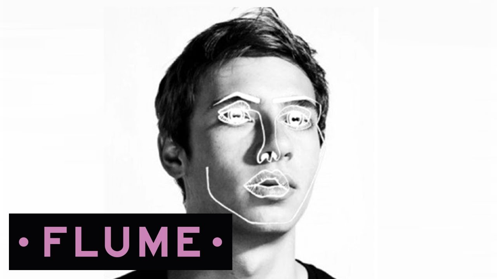
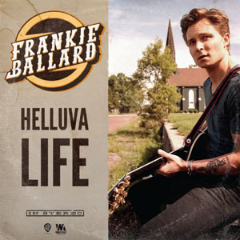
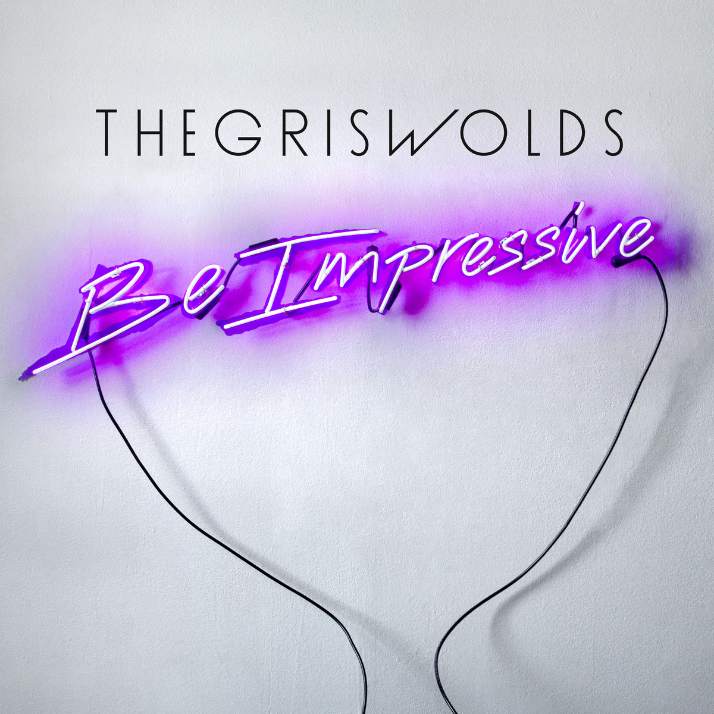

I first heard this song on ESPN's TV show College Gameday and I have not been able to stop listening to it since! If you're ever having a bad day, and need something to cheer you up, this song will surely do that! Enjoy!
Due to YouTube copyright restrictions, I am not allowed to embed the video, but here is the link to listen to the song on YouTube! Enjoy!
As you might have been able to tell already, I really enjoy happy music. This song has an incredible beat and it fits together perfectly with the vocals. Enjoy another song to pick up your day!
Check out the song below!
Best Beers of our Lives - Chase Rice
Other than EDM music (Electronic Dance Music), I am a very big country music fan. I go to a country festival every year called Faster Horses and it is by far my favorite time of the year. This Chase Rice song is a great upbeat song that you can have a good time to when you're out in the sun enjoying a beautful summer day.
Give the song a listen below!
Go Outside - Cults
This indie jam is great for any type of activity, from studying to working out. I think its the surreal feeling you get when you listen to it that allows for that. Enjoy!
Due to YouTube copyright restrictions, I am not allowed to embed the video, but here is the link to listen to the song on YouTube! Enjoy!
Another thing great about country music is its ability to have songs with all kinds of emotion and stories attached to them. This Dierks Bentley song talks about never giving up in and doing whatever you can to be successful in life. Whenever you need some extra motivation gives the tune a listen!
Due to YouTube copyright restrictions, I am not allowed to embed the video, but here is the link to listen to the song on YouTube! Enjoy!
With studying for finals coming up, I would suggest listening to chill EDM music. That is my favorite because it keeps you focused and in the zone studying. This song by Faul is one my favorites for that.
Check out the song below!
Disclosure - You & Me (Flume Remix)

Flume is my second favorite EDM artist (behind ODESZA, of course!), and this is my favorite track of his. Even though Flume is not my absolute favorite, this song is my favorite EDM song ever. The drop is so perfect and I highly recommend giving this one a listen!
Give it a listen!
Helluva Life - Frankie Ballard

Yet another country song that makes you appreciate life. Frankie's lyric "Pennies make dimes, and dimes make dollars" is one of my favorite lyrics ever because I understand that to mean that you have to make the most out what you are given in life and appreciate it.
Due to YouTube copyright restrictions, I am not allowed to embed the video, but here is the link to listen to the song on YouTube! Enjoy!
ODESZA adds a great twist to this great Hayden James song. I recently saw ODESZA in concert and this song was by far my favorite they did. The original song is also great too if you want to check that out!
Give it a listen!
16 Years - The Griswolds

When I heard this song playing in EA Sport's FIFA 15, I knew that it was going straight to my Spotify playlist. I'm sure once you give it a listen, you might do the same!
Due to YouTube copyright restrictions, I am not allowed to embed the video, but here is the link to listen to the song on YouTube! Enjoy!